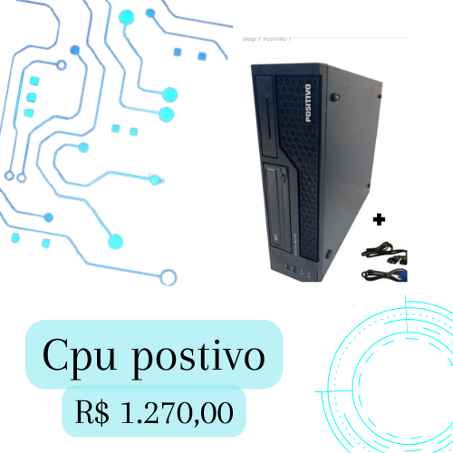

PC-Positivo Master C6300 minipro Core i5-10100T 256Gb

Descrição do Produto:
Processador DECIMA Geração Intel® CoreTM i5-10400
Soquete LGA 1151
Placa-mãe Positivo
Sistema Operacional Windows 11 Pro (64 bits)
Memória RAM
8 GB1 DDR4 SDRAM (2400 MHz, Non-ECC)
2x slots SODIMM com suporte a expansão de até 32 GB
Suporte ao modo Dual Channel
Armazenamento SSD, 256 GB, SATA